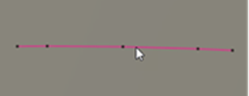
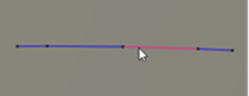

<div id="edit_selectmode"><p>ツールパスのパスとのセグメント間の選択タイプをフィルタします。</p>
<table class="tipTable" cellspacing="10">
<tr>
<td><center></center></td>
</tr><tr>
<td><center><p><b>パス</b><br>
全切削動作</p></center></td>
</tr></table>

<table class="tipTable" cellspacing="10">
<tr>
<td><center></center></td>
</tr><tr>
<td><center><p><b>セグメント</b><br>
切削動作の一部</p></center></td>
</tr></table>
</div>